Register Summary
General Address Space Definitions
MMIO Address Space (USB_HOST_MMIO_ADDRESS_SPACE: 0x0000-0xffffffffff)
The MMIO physical address space for the USB is described below. This is a general description of the MMIO space as opposed to a register description| Bits | Name | Type | Reset | Description
| 39:38 | CHANNEL | RW | 0 | This field of the address selects the channel (device). Channel-0 is the USB Device (Endpoint). Channel-1 is the USB Host colocated with the endpoint device. Channel-2 is the other USB Host. |
19:18 | PROT | RW | 0 | Protection level. Setting to 0 or 1 allows access to all registers. Setting to 2 denies access to registers at level 2. Setting to 3 denies access to registers at levels 1 and 2. | 17:0 | OFFSET | RW | 0 | This field of the address provides an offset into the region being accessed. | |
|---|
Register Definitions
Device Info (USB_HOST_DEV_INFO: 0x0000)
This register provides general information about the device attached to this port and channel.
| Bits | Name | Type | Reset | Description
| 35:32 | INSTANCE | RO | HW | Instance ID for multi-instantiated devices. | 27:24 | REGISTER_REV | RO | 0 | Register format architectural revision. | 23:16 | DEVICE_REV | RO | HW | Device revision ID. | 11:0 | TYPE | RO | 029h | Encoded device Type - 41 to indicate USB Host |
|
|---|
Device Control (USB_HOST_DEV_CTL: 0x0008)
This register provides general device control.This register is protected at level 2

| Bits | Name | Type | Reset | Description
| 3 | SDN_ROUTE_ORDER | RW | 0 | When 1, packets sent on the SDN will be routed x-first. When 0, packets will be routed y-first. This setting must match the setting in the Tiles. Devices may have additional interfaces with customized route-order settings used in addition to or instead of this field. | 2 | RDN_ROUTE_ORDER | RW | 1 | When 1, packets sent on the RDN will be routed x-first. When 0, packets will be routed y-first. This setting must match the setting in the Tiles. Devices may have additional interfaces with customized route-order settings used in addition to or instead of this field. | |
|---|
MMIO Info (USB_HOST_MMIO_INFO: 0x0010)
This register provides information about how the physical address is interpreted by the IO device. The PA is divided into {CHANNEL,SVC_DOM,IGNORED,REGION,OFFSET}. The values in this register define the size of each of these fields.
| Bits | Name | Type | Reset | Description
| 40:35 | REGION_WIDTH | RO | 0 | Size of the REGION field for this channel. The LSBs of the physical address are interpreted as {REGION,OFFSET} | 34:29 | OFFSET_WIDTH | RO | 18 | Size of the OFFSET field for this channel. The LSBs of the physical address are interpreted as {REGION,OFFSET} | 28:22 | NUM_SVC_DOM | RO | 0 | Number of service domains associated with this channel. | 21:19 | SVC_DOM_WIDTH | RO | 0 | Number of bits of service-domain specifier for this channel. The MSBs of the physical addrress are interpreted as {channel, service-domain} | 18:4 | NUM_CH | RO | 3 | Each configuration channel is mapped to a packet device (MAC) having its own config registers. Mapping TBD | 3:0 | CH_WIDTH | RO | 2 | Number of bits of channel specifier for all channels. The MSBs of the physical addrress are interpreted as {channel, service-domain} | |
|---|
Memory Info (USB_HOST_MEM_INFO: 0x0018)
This register provides information about memory setup required for this device.
| Bits | Name | Type | Reset | Description
| 55:48 | NUM_TLB_ENT | RO | 16 | Number of IO TLB entries per ASID. | 47:40 | NUM_ASIDS | RO | 1 | Number of ASIDS supported if this device has an IO TLB (otherwise this field is zero). | 35:32 | NUM_HFH_TBL | RO | 1 | Number of hash-for-home tables that must be configured for this channel. | 31:0 | REQ_PORTS | RO | 32768 | Each bit represents a request (QDN) port on the tile fabric. Bit[15] represents the QDN port used for device configuration and is always set for devices implemented on channel-0. Bit[14] is the first port clockwise from the port used to access configuration space. Bit[13] is the second port in the clockwise direction. Bit[16] is the first port counter-clockwise from the port used to access configuration space. When a bit is set, the device has a QDN port at the associated location. For devices using a nonzero channel, this register may return all zeros. | |
|---|
Scratchpad (USB_HOST_SCRATCHPAD: 0x0020)
Scratchpad
| Bits | Name | Type | Reset | Description
| 63:0 | SCRATCHPAD | RW | 0 | Scratchpad | |
|---|
Semaphore0 (USB_HOST_SEMAPHORE0: 0x0028)
Semaphore
| Bits | Name | Type | Reset | Description
| 0 | VAL | RW | 0 | When read, the current semaphore value is returned and the semaphore is set to 1. Bit can also be written to 1 or 0. | |
|---|
Semaphore1 (USB_HOST_SEMAPHORE1: 0x0030)
SemaphoreThis register is protected at level 1

| Bits | Name | Type | Reset | Description
| 0 | VAL | RW | 0 | When read, the current semaphore value is returned and the semaphore is set to 1. Bit can also be written to 1 or 0. | |
|---|
Clock Count (USB_HOST_CLOCK_COUNT: 0x0038)
Clock Count
| Bits | Name | Type | Reset | Description
| 15:1 | COUNT | RO | 0 | Indicates the number of core clocks that were counted during 1000 device clock periods. Result is accurate to within +/-1 core clock periods. | 0 | RUN | RW | 0 | When 1, the counter is running. Cleared by HW once count is complete. When written with a 1, the count sequence is restarted. Counter runs automatically after reset. Software must poll until this bit is zero, then read the CLOCK_COUNT register again to get the final COUNT value. | |
|---|
Error Status (USB_HOST_ERROR_STATUS: 0x0210)
Indicators for various fatal and non-fatal USB error conditionsThis register is protected at level 2
| Bits | Name | Type | Reset | Description
| 0 | MMIO_ILL_OPC | RO | 0 | Illegal opcode received on MMIO interface | |
|---|
MMIO Error Information (USB_HOST_MMIO_ERROR_INFO: 0x0218)
Provides diagnostics information when an MMIO error occurs. Captured whenever the MMIO_ERROR interrupt condition occurs which includes size errors, read/write errors, and protection errors.This register is protected at level 2

| Bits | Name | Type | Reset | Description
| 58:54 | OPC | RO | 0 | Opcode of request. MMIO supports only MMIO_READ (0x0e) and MMIO_WRITE (0x0f). All others are reserved and will only occur on a misconfigured TLB. | 53:12 | PA | RO | 0 | Full PA from request. | 11:8 | SIZE | RO | 0 | Request size. 0=1B, 1=2B, 2=4B, 3=8B, 4=16B, 5=32B, 6=48B, 7=64B. | 7:0 | SRC | RO | 0 | Source Tile in {x[3:0],y[3:0]} format. | |
|---|
MAC Access Error Information (USB_HOST_MAC_ACCESS_ERROR_INFO: 0x0220)
Provides diagnostics information when a MAC response error occurs. Captured whenever the MAC_ACCESS_ERROR interrupt condition occurs which includes size errors, read/write errors, and protection errors.This register is protected at level 2
| Bits | Name | Type | Reset | Description
| 34:32 | SIZE | RO | 0 | Request size. 0=1B, 1=2B, 2=4B, 3=8B, 4=16B, 5=32B, 6=48B, 7=64B. | 31:0 | ADDR | RO | 0 | Full address from request. | |
|---|
Bindings for interrupt vectors (USB_HOST_INT_BIND: 0x0300)
This register provides read/write access to all of the interrupt bindings for the rshim. The VEC_SEL field is used to select the vector being configured and the BIND_SEL selects the interrupt within the vector. To read a binding, first write the VEC_SEL and BIND_SEL fields along with a 1 in the NW field. Then read back the register.This register is protected at level 2
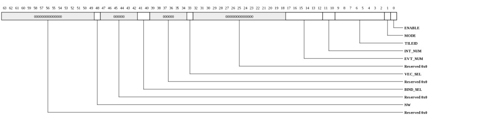
| Bits | Name | Type | Reset | Description
| 48 | NW | WO | 0 | When written with a 1, the interrupt binding data will not be modified. Set this when writing the VEC_SEL and BIND_SEL fields in preparation for a read. | 41:40 | BIND_SEL | RW | HW | Selects binding within the vector selected by VEC_SEL. | 33 | VEC_SEL | RW | 0 | Selects vector whose bindings are to be accessed. |
17:12 | EVT_NUM | RW | HW | Event number to be delivered to Tile | 11:10 | INT_NUM | RW | HW | Interrupt number to be delivered to Tile | 9:2 | TILEID | RW | HW | Tile targeted for this interrupt in {x[3:0],y[3:0]} format. | 1 | MODE | RW | 0 | When 1, interrupt will be dispatched each time it occurs. When 0, the interrupt is only sent if the status bit is clear. | 0 | ENABLE | RW | 0 | Enable the interrupt. When 0, the interrupt won't be dispatched, however the STATUS bit will continue to be updated. | |
|---|
Interrupt vector-0, write-one-to-clear (USB_HOST_INT_VEC0: 0x0308)
This describes the interrupt status vector that is accessible through INT_VEC0_W1TC and INT_VEC0_RTC.This register is protected at level 2
| Bits | Name | Type | Reset | Description
| 2 | AHB_BUS_ERROR | RW | 0 | An AHB bus request encountered an error. | 1 | MMIO_ERROR | RW | 0 | An MMIO request encountered an error. Error info captured in USB_HOST_CFG_MMIO_ERROR_INFO. | 0 | TLB_MISS | RW | 0 | TLB miss occurred on a TLB transaction. Exception information contained in USB_HOST_TLB_USB_EXC_ADDR | |
|---|
Interrupt vector-0, write-one-to-clear (USB_HOST_INT_VEC0_W1TC: 0x0308)
Interrupt status vector with write-one-to-clear functionality. Provides access to the same status bits that are visible in INT_VEC0_RTC. Writing a 1 clears the status bit. This vector contains the following interrupts:0: TLB_MISS - TLB miss occurred on a TLB transaction. Exception information contained in USB_DEVICE_TLB_USB_EXC_ADDR
1: MMIO_ERROR - An MMIO request encountered an error. Error info captured in USB_HOST_CFG_MMIO_ERROR_INFO.
2: AHB_BUS_ERROR - An AHB bus request encountered an error. Exception information contained in TBD
3: RSVD3 - NOT IMPLEMENTED
This register is protected at level 2
| Bits | Name | Type | Reset | Description
| 3:0 | INT_VEC0_W1TC | RW | 0 | Interrupt status vector with write-one-to-clear functionality. Provides access to the same status bits that are visible in INT_VEC0_RTC. Writing a 1 clears the status bit. This vector contains the following interrupts: | 0: TLB_MISS - TLB miss occurred on a TLB transaction. Exception information contained in USB_DEVICE_TLB_USB_EXC_ADDR 1: MMIO_ERROR - An MMIO request encountered an error. Error info captured in USB_HOST_CFG_MMIO_ERROR_INFO. 2: AHB_BUS_ERROR - An AHB bus request encountered an error. Exception information contained in TBD 3: RSVD3 - NOT IMPLEMENTED |
|---|
Interrupt vector-0, read-to-clear (USB_HOST_INT_VEC0_RTC: 0x0310)
Interrupt status vector with read-to-clear functionality. Provides access to the same status bits that are visible in INT_VEC0_W1TC. Reading this register clears all of the associated interrupts. This vector contains the following interrupts:0: TLB_MISS - TLB miss occurred on a TLB transaction. Exception information contained in USB_DEVICE_TLB_USB_EXC_ADDR
1: MMIO_ERROR - An MMIO request encountered an error. Error info captured in USB_HOST_CFG_MMIO_ERROR_INFO.
2: AHB_BUS_ERROR - An AHB bus request encountered an error. Exception information contained in TBD
3: RSVD3 - NOT IMPLEMENTED
This register is protected at level 2
| Bits | Name | Type | Reset | Description
| 3:0 | INT_VEC0_RTC | RO | 0 | Interrupt status vector with read-to-clear functionality. Provides access to the same status bits that are visible in INT_VEC0_W1TC. Reading this register clears all of the associated interrupts. This vector contains the following interrupts: | 0: TLB_MISS - TLB miss occurred on a TLB transaction. Exception information contained in USB_DEVICE_TLB_USB_EXC_ADDR 1: MMIO_ERROR - An MMIO request encountered an error. Error info captured in USB_HOST_CFG_MMIO_ERROR_INFO. 2: AHB_BUS_ERROR - An AHB bus request encountered an error. Exception information contained in TBD 3: RSVD3 - NOT IMPLEMENTED |
|---|
Interrupt vector-1, write-one-to-clear (USB_HOST_INT_VEC1: 0x0318)
This describes the interrupt status vector that is accessible through INT_VEC1_W1TC and INT_VEC1_RTC.This register is protected at level 2
| Bits | Name | Type | Reset | Description
| 2 | OHCI_SMI_INT | RW | 0 | OHCI HCI bus management interrupt. | 1 | OHCI_IRQ_INT | RW | 0 | OHCI HCI bus general interrupt. | 0 | EHCI_INT | RW | 0 | EHCI interrupt. | |
|---|
Interrupt vector-1, write-one-to-clear (USB_HOST_INT_VEC1_W1TC: 0x0318)
Interrupt status vector with write-one-to-clear functionality. Provides access to the same status bits that are visible in INT_VEC1_RTC. Writing a 1 clears the status bit. This vector contains the following interrupts:0: EHCI_INT - EHCI interrupt
1: OHCI_IRQ_INT - OHCI HCI bus general interrupt
2: OHCI_SMI_INT - OHCI HCI bus management interrupt
3: RSVD3 - NOT IMPLEMENTED
| Bits | Name | Type | Reset | Description
| 3:0 | INT_VEC1_W1TC | RW | 0 | Interrupt status vector with write-one-to-clear functionality. Provides access to the same status bits that are visible in INT_VEC1_RTC. Writing a 1 clears the status bit. This vector contains the following interrupts: | 0: EHCI_INT - EHCI interrupt 1: OHCI_IRQ_INT - OHCI HCI bus general interrupt 2: OHCI_SMI_INT - OHCI HCI bus management interrupt 3: RSVD3 - NOT IMPLEMENTED |
|---|
Interrupt vector-0, read-to-clear (USB_HOST_INT_VEC1_RTC: 0x0320)
Interrupt status vector with read-to-clear functionality. Provides access to the same status bits that are visible in INT_VEC1_W1TC. Reading this register clears all of the associated interrupts. This vector contains the following interrupts:0: EHCI_INT - EHCI interrupt
1: OHCI_IRQ_INT - OHCI HCI bus general interrupt
2: OHCI_SMI_INT - OHCI HCI bus management interrupt
3: RSVD3 - NOT IMPLEMENTED
| Bits | Name | Type | Reset | Description
| 3:0 | INT_VEC1_RTC | RO | 0 | Interrupt status vector with read-to-clear functionality. Provides access to the same status bits that are visible in INT_VEC1_W1TC. Reading this register clears all of the associated interrupts. This vector contains the following interrupts: | 0: EHCI_INT - EHCI interrupt 1: OHCI_IRQ_INT - OHCI HCI bus general interrupt 2: OHCI_SMI_INT - OHCI HCI bus management interrupt 3: RSVD3 - NOT IMPLEMENTED |
|---|
USB Host Reset Control (USB_HOST_RESET_CONTROL: 0x0600)
Control USB Host resetThis register is protected at level 2
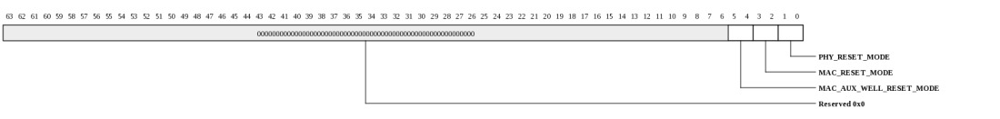
| Bits | Name | Type | Reset | Description
| 5:4 | MAC_AUX_WELL_RESET_MODE | RW | 0 | Control USB host MAC aux well reset |
3:2 | MAC_RESET_MODE | RW | 0 | Control USB host MAC reset |
1:0 | PHY_RESET_MODE | RW | 0 | Control USB host PHY reset |
|
|---|
USB CSR (USB_HOST_CSR: 0x0608)
USB ConfigurationThis register is protected at level 2
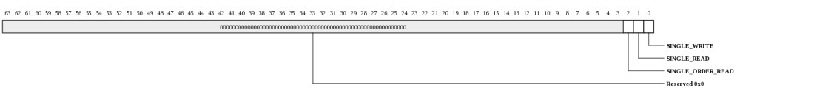
| Bits | Name | Type | Reset | Description
| 2 | SINGLE_ORDER_READ | RW | 0 | No read data buffering allowed for the ordered page | 1 | SINGLE_READ | RW | 0 | No read data buffering allowed | 0 | SINGLE_WRITE | RW | 0 | Allow single AHB write outstanding only | |
|---|
MAC_SYS_INTERRUPT_CONTROL (USB_HOST_MAC_SYS_INTERRUPT_CONTROL: 0x1000)
MAC system interrupt signal| Bits | Name | Type | Reset | Description
| 0 | SYS_INTERRUPT_I | RW | 0 | System Interrupt, system error indication to host controller only for non-AHB | errors. In addition to AHB error conditions, this signal is active when any fatal error occurs during a host system access involving the controller. In order for the host to detect this signal, the minimum signal duration is at least one AHB clock pulse (hclk_i). Note that when the EHCI and OHCI Host Controllers sample this signal asserted, the controllers are halted to prevent further execution of the scheduled descriptors and send a host System Error interrupt. The EHCI and OHCI Host Controllers do not process any lists until the corresponding Host Controller Driver clears the corresponding error. |
|---|
MAC_AHB_STRAP_CONTROL (USB_HOST_MAC_AHB_STRAP_CONTROL: 0x1008)
AHB system strap signals.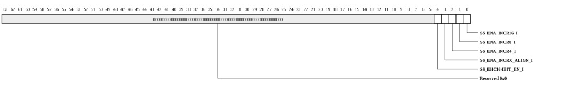
| Bits | Name | Type | Reset | Description
| 4 | SS_EHCI64BIT_EN_I | RW | 1 | EHCI AHB Master 64-bit Addressing Enable | 3 | SS_ENA_INCRX_ALIGN_I | RW | 0 | Burst Alignment Enable | 2 | SS_ENA_INCR4_I | RW | 0 | AHB Burst Type INCR4 Enable | 1 | SS_ENA_INCR8_I | RW | 0 | AHB Burst Type INCR8 Enable | 0 | SS_ENA_INCR16_I | RW | 0 | AHB Burst Type INCR16 Enable | |
|---|
MAC_EHCI_STRAP_CONTROL (USB_HOST_MAC_EHCI_STRAP_CONTROL: 0x1010)
The EHCI Strap signals configure the power state and the Frame Length Adjustment register (FLADJ), anddisplay USB status.
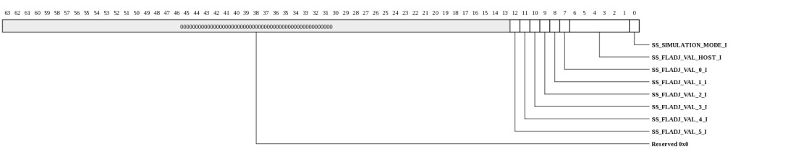
| Bits | Name | Type | Reset | Description
| 12 | SS_FLADJ_VAL_5_I | RW | 1 | Frame Length Adjustment Register per Port. Must be the same as bit 5 of SS_FLADJ_VAL_HOST_I. | 11 | SS_FLADJ_VAL_4_I | RW | 0 | Frame Length Adjustment Register per Port. Must be the same as bit 4 of SS_FLADJ_VAL_HOST_I. | 10 | SS_FLADJ_VAL_3_I | RW | 0 | Frame Length Adjustment Register per Port. Must be the same as bit 3 of SS_FLADJ_VAL_HOST_I. | 9 | SS_FLADJ_VAL_2_I | RW | 0 | Frame Length Adjustment Register per Port. Must be the same as bit 2 of SS_FLADJ_VAL_HOST_I. | 8 | SS_FLADJ_VAL_1_I | RW | 0 | Frame Length Adjustment Register per Port. Must be the same as bit 1 of SS_FLADJ_VAL_HOST_I. | 7 | SS_FLADJ_VAL_0_I | RW | 0 | Frame Length Adjustment Register per Port. Must be the same as bit 0 of SS_FLADJ_VAL_HOST_I. | 6:1 | SS_FLADJ_VAL_HOST_I | RW | 20h | Frame Length Adjustment Register. | Function: This feature adjusts any offset from the clock source that drives the uSOF counter. The uSOF cycle time (number of uSOF counter clock periods to generate a uSOF microframe length) is equal to 59,488 plus this value. The default value is decimal 32 (0x20), which gives an SOF cycle time of 60,000 (each microframe has 60,000 bit times). Frame Length (decimal) FLADJ Value (decimal) 59488 0 (0x00) 59504 1 (0x01) 59520 2 (0x02) ... ... 59984 31 (0x1F) 60000 32 (0x20) ... ... 60496 63 (0x3F) Note that this register must be modified only when the HCHalted bit in the USBSTS register is set to 1; otherwise, the EHCI yields undefined results. The register must not be reprogrammed by the USB system software unless the default or BIOS programmed values are incorrect, or the system is restoring the register while returning from a suspended state. Connect this signal to value 0x20 (32 decimal) for no offset. 0 | SS_SIMULATION_MODE_I | RW | 0 | Simulation Mode | |
|---|
MAC_ULPI_STRAP_CONTROL (USB_HOST_MAC_ULPI_STRAP_CONTROL: 0x1018)
ULPI strap signal| Bits | Name | Type | Reset | Description
| 0 | SS_ULPI_PP2VBUS_I | RW | 0 | This strap signal enables the function to automatically set/clear | the PHY's port power setting to reflect the Host's port power setting. When a change to PORTSC[12] is detected, the ULPI wrapper will automatically initiate a register write operation to the PHY's OTG Control register bit 5. Note: If this strap signal is not high, then the software needs to disable the port power when an over current condition occurs. |
|---|
MAC_OHCI_INTERFACE_CONTROL (USB_HOST_MAC_OHCI_INTERFACE_CONTROL: 0x1020)
OHCI Host Controller Controls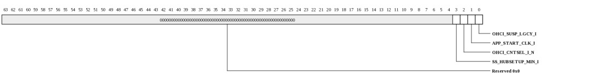
| Bits | Name | Type | Reset | Description
| 3 | SS_HUBSETUP_MIN_I | RW | 0 | Hub setup time control signal | Some FS devices down the hub do not recover properly after a pre-amble packet, directed at other LS device, if the hub setup time is four FS clocks. Four FS clocks just meet the specification. By adding one extra clock, these FS devices are made to work better. This strap selects four or five FS clocks as hub setup time for interoperability with the various devices. It is recommended to tie low, that is, for five FS clocks. When tied HIGH, four FS clocks of hub setup time is used. When tied LOW, five FS clocks of hub setup time is used. 2 | OHCI_CNTSEL_I_N | RW | 0 | Count Select | to select the counter value for simulation or real time for 1 ms. 0: Count full 1 ms 1: Simulation time 1 | APP_START_CLK_I | RW | 0 | OHCI Clock control signal. | When the OHCI clocks are suspended, the system has to assert this signal to start the clocks (12 and 48 MHz). This should be deasserted after the clocks are started and before the host is suspended again. (Host is suspended means HCFS = SUSPEND or all the OHCI ports are suspended). 0 | OHCI_SUSP_LGCY_I | RW | 0 | OHCI Clock control signal | When tied HIGH and the USB port is owned by OHCI, the signal utmi_suspend_o_n reflects the status of the USB port: (suspended or not suspended). When tied LOW and the USB port is owned by OHCI, then - utmi_suspend_o_n asserts (0) if all the OHCI ports are suspended, or if the OHCI is in global suspend state (HCFS=USBSUSOPEND). - utmi_suspend_o_n deasserts (1) if any of the OHCI ports are not suspended and OHCI is not in global suspend. Note: This strap must be tied low if the OHCI 48/12 MHz clocks must be suspended when the EHCI and OHCI controllers are not active. |
|---|
MAC_OHCI_LEGACY_CONTROL (USB_HOST_MAC_OHCI_LEGACY_CONTROL: 0x1028)
OHCI Host Controller Legacy Controls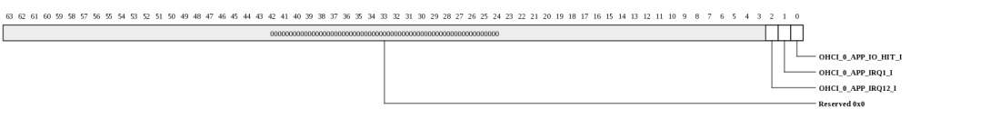
| Bits | Name | Type | Reset | Description
| 2 | OHCI_0_APP_IRQ12_I | RW | 0 | External Interrupt 12. | Function: This external keyboard controller interrupt 12 causes an emulation interrupt. 1 | OHCI_0_APP_IRQ1_I | RW | 0 | External Interrupt 1. | Function: This external keyboard controller interrupt 1 causes an emulation interrupt. 0 | OHCI_0_APP_IO_HIT_I | RW | 0 | Application I/O Hit. | Function: This signal indicates a PCI I/O cycle strobe. (This signal is relevant only when using a PCI controller.) |
|---|
MAC_EHCI_INTERRUPT_STATUS (USB_HOST_MAC_EHCI_INTERRUPT_STATUS: 0x1030)
EHCI Host Controller Interrupt Status| Bits | Name | Type | Reset | Description
| 0 | EHCI_INTERRUPT_O | RO | 0 | USB Interrupt. | Function: This bit interrupts the Host Controller Driver when a USB interrupt condition occurs. Interrupt conditions are: Interrupt on Async Address host System Error Frame List Rollover Port Change USB Error USB Interrupt |
|---|
MAC_EHCI_SIDEBAND_STATUS (USB_HOST_MAC_EHCI_SIDEBAND_STATUS: 0x1038)
EHCI Host Controller Status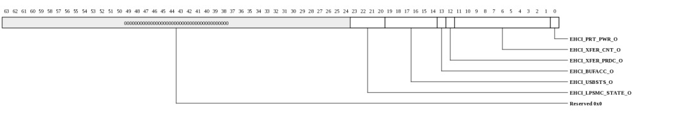
| Bits | Name | Type | Reset | Description
| 23:20 | EHCI_LPSMC_STATE_O | RO | 0 | LPSMC State | 19:14 | EHCI_USBSTS_O | RO | 0 | USB Status. | Function: EHCI USBSTS register[5:0] bits. This signal indicates pending interrupts and various host controller statuses. These 6 bits reflect the value in the USBSTS[5:0] register. 13 | EHCI_BUFACC_O | RO | 0 | EHCI Buffer Access. | Function: Level signal that is asserted whenever the host controller does a data read/write transfer. If this signal is deasserted while the AHB is active, the host controller is performing a descriptor read/write. This signal can be used to support Big Endian operation. 12 | EHCI_XFER_PRDC_O | RO | 0 | Transfer Periodic. | Function: Indicates that the current transfer of the EHCI master on the AHB bus belongs to periodic descriptor/data. 11:1 | EHCI_XFER_CNT_O | RO | 0 | Transfer Count. | Function: Transfer byte count from the EHCI master of the current AHB transaction. This is a constant signal and its value is valid when the EHCI starts its AHB address phase. The host controller aborts an AHB transfer before completing the transactions specified in ehci_xfer_cnt when a data read transaction is in progress and both these conditions are true: there is insufficient time to complete the USB transfer the Root Hub detects an underrun condition In CONFIG1 mode, this signal must be used only if Break Memory Transfer (bit 0 of INSNREG03) is set. 0 | EHCI_PRT_PWR_O | RO | 0 | Port Power | |
|---|
MAC_OHCI_STATUS (USB_HOST_MAC_OHCI_STATUS: 0x1040)
OHCI Host Controller Status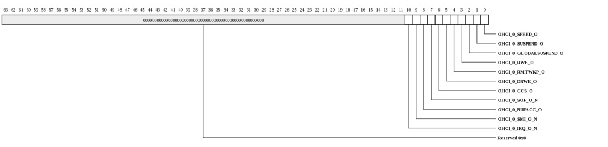
| Bits | Name | Type | Reset | Description
| 10 | OHCI_0_IRQ_O_N | RO | 0 | HCI Bus General Interrupt. | Function: This is one of two interrupts the host controller uses to notify the Host Controller Driver when an interrupt condition occurs. If the application bus is PCI, this must be tied to a standard PCI interrupt pin. The host controller uses this pin when the HcControl.IR bit is set to zero. 9 | OHCI_0_SMI_O_N | RO | 0 | HCI Bus System Management Interrupt. | Function: This is one of the two interrupts the host controller uses to notify the Host Controller Driver when an interrupt condition occurs. The host controller uses this pin when the HcControl.IR bit is set to one.This signal is used only when Legacy Support is provided. Refer to OpenHCI 1.0a for legacy specifications. 8 | OHCI_0_BUFACC_O | RO | 0 | Host Controller Buffer Access Indicator. | Function: When active, this signal indicates that the host controller is currently accessing the data buffer indicated by the TD. This is simply a status signal to let the application know whether the host controller is reading from or writing to the data buffer indicated by TD, or reading from or writing to the ED, TD descriptor, etc. If this is set (1) during the cycle on the HCI master bus, it indicates buffer fetch and if reset (0), all other transfers (such as ED, TD fetch, and Status Writeback). This is a status signal; the application need not take any action when it is asserted. 7 | OHCI_0_SOF_O_N | RO | 0 | Host Controller's New Frame. | Function: The host controller asserts this signal for one clock cycle, whenever its internal Frame Counter (HcFmRemaining) reaches 0 while it is in the Operational state. At this time, HcFmRemaining is reloaded with HcFmInterval. (Note that the reset value of HcFmInterval is 0.) On the next clock cycle, the first bit of SOF (first bit of the Sync Field for the SOF token) is sent to the USB. This signal's assertion alerts the application to the new frame and to the SOF token being sent onto the USB. The application need not take action. The host controller generates this signal only when it is in the Operational state and sending SOF tokens. 6 | OHCI_0_CCS_O | RO | 0 | Current Connect Status of Each Port. | Function: When set, this bit indicates that the port state machine is in a connected state. If the bit is cleared, the port state machine is in either a disconnected or powered-off state. Note that this is a status signal that the application can ignore under normal host controller operation. It is also used in external clock start/stop logic. 5 | OHCI_0_DRWE_O | RO | 0 | Device Remote Wake-Up Enable. | Function: This signal reflects the HcRhStatus.DRWE bit. When active, it causes the host controller to treat a connect or disconnect event as a remote wake-up, which in turn causes the host controller to enter the Global Resume state from the Global Suspend state. If this bit is cleared, a connect or disconnect event is not treated as a remote wake-up event. Note: This is a status signal that helps clock start/stop logic. It can be ignored under normal host controller operation. 4 | OHCI_0_RMTWKP_O | RO | 0 | Remote Wakeup Status. | Function: See the HCI_MRmtWkp signal description in the USB 1.1 OHCI Host Controller Family Databook. 3 | OHCI_0_RWE_O | RO | 0 | Remote Wake Up Enable. | Function: This bit reflects the HcControl.RWE bit. This is brought out as a status signal and can be ignored by the application for normal host controller operation. 2 | OHCI_0_GLOBALSUSPEND_O | RO | 0 | Host Controller is in Global Suspend State. | Function: This signal is asserted 5 ms after the host controller enters the USB Suspend state, and is asserted as long as the host controller remains in this state. The host controller enters the USB Suspend state when the Host Controller Driver forces it by writing to the HcControl.HCFS bits. The host controller exits this state when either the Host Controller Driver moves it to USB Reset (Global USB Reset) or USB Resume (Global Resume) or when a remote wake-up event is seen at one of the downstream USB ports. Note: This is a status signal that the application need not use for normal operation. This information can be used if clock start or stop logic external to the host controller is implemented during a global suspend. 1 | OHCI_0_SUSPEND_O | RO | 0 | OHCI Suspend. | Function: In the current database, this signal is not required for UTMI connection. It has been replaced with utmi_suspend. 0 | OHCI_0_SPEED_O | RO | 0 | OHCI USB Speed. | Function: In the current database, this signal is not required for UTMI connection. It has been replaced with utmi_term_select. |
|---|
MAC_OHCI_LEGACY_STATUS (USB_HOST_MAC_OHCI_LEGACY_STATUS: 0x1048)
OHCI Host Controller Legacy Status| Bits | Name | Type | Reset | Description
| 2 | OHCI_0_LGCY_EMU_EN_O | RO | 0 | OHCI Legacy Emulation Enable. | Function: This signal indicates that Legacy emulation support is enabled for the OHCI controller and the application can read or write I/O ports 60h/64h when I/O access for the OHCI controller is enabled. 1 | OHCI_0_LGCY_IRQ12_O | RO | 0 | OHCI Legacy IRQ12. | Function: This bit is set to 1 when an emulation interrupt condition exists, OutputFull and IRQEn are 1, and AuxOutputFull is 0. 0 | OHCI_0_LGCY_IRQ1_O | RO | 0 | OHCI Legacy IRQ1. | Function: This bit is set to 1 when an emulation interrupt condition exists and OutputFull, IRQEn, and AuxOutputFull are set to 1. |
|---|
HCCAPBASE_REG (USB_HOST_HCCAPBASE_REG: 0x10000)
Capability Register
| Bits | Name | Type | Reset | Description
| 31:0 | HCCAPBASE_REG | RW | 0 | Capability Register | |
|---|
HCSPARAMS_REG (USB_HOST_HCSPARAMS_REG: 0x10004)
Structural Register| Bits | Name | Type | Reset | Description
| 31:0 | HCSPARAMS_REG | RW | 0 | Structural Register | |
|---|
HCCPARAMS_REG (USB_HOST_HCCPARAMS_REG: 0x10008)
Structural Register| Bits | Name | Type | Reset | Description
| 31:0 | HCCPARAMS_REG | RW | 0 | Structural Register | |
|---|
USBCMD_REG (USB_HOST_USBCMD_REG: 0x10010)
USB Command
| Bits | Name | Type | Reset | Description
| 31:0 | USBCMD_REG | RW | 0 | USB Command | |
|---|
USBSTS_REG (USB_HOST_USBSTS_REG: 0x10014)
USB Status| Bits | Name | Type | Reset | Description
| 31:0 | USBSTS_REG | RW | 0 | USB Status | |
|---|
USBINTR_REG (USB_HOST_USBINTR_REG: 0x10018)
USB Interrupt Enable| Bits | Name | Type | Reset | Description
| 31:0 | USBINTR_REG | RW | 0 | USB Interrupt Enable | |
|---|
FRINDEX_REG (USB_HOST_FRINDEX_REG: 0x1001c)
USB Frame Index
| Bits | Name | Type | Reset | Description
| 31:0 | FRINDEX_REG | RW | 0 | USB Frame Index | |
|---|
CTRLDSSEGMENT_REG (USB_HOST_CTRLDSSEGMENT_REG: 0x10020)
4G Segment Selector
| Bits | Name | Type | Reset | Description
| 31:0 | CTRLDSSEGMENT_REG | RW | 0 | 4G Segment Selector | |
|---|
PERIODICLISTBASE_REG (USB_HOST_PERIODICLISTBASE_REG: 0x10024)
Periodic Frame List Base Address Register
| Bits | Name | Type | Reset | Description
| 31:0 | PERIODICLISTBASE_REG | RW | 0 | Periodic Frame List Base Address Register | |
|---|
ASYNCLISTADDR_REG (USB_HOST_ASYNCLISTADDR_REG: 0x10028)
Asynchronous List Address| Bits | Name | Type | Reset | Description
| 31:0 | ASYNCLISTADDR_REG | RW | 0 | Asynchronous List Address | |
|---|
CONFIGFLAG_REG (USB_HOST_CONFIGFLAG_REG: 0x10050)
Configured Flag Register
| Bits | Name | Type | Reset | Description
| 31:0 | CONFIGFLAG_REG | RW | 0 | Configured Flag Register | |
|---|
PORTSC_REG (USB_HOST_PORTSC_REG: 0x10054)
Port Status/Control| Bits | Name | Type | Reset | Description
| 31:0 | PORTSC_REG | RW | 0 | Port Status/Control | |
|---|
INSNREG00_REG (USB_HOST_INSNREG00_REG: 0x10090)
Allows you to change the microframe length value (default is microframe SOF = 125 ms) to reduce the simulation time| Bits | Name | Type | Reset | Description
| 31:0 | INSNREG00_REG | RW | 0 | Allows you to change the microframe length value (default is microframe SOF = 125 ms) to reduce the simulation time | |
|---|
INSNREG01_REG (USB_HOST_INSNREG01_REG: 0x10094)
Programmable Packet Buffer OUT/IN Thresholds| Bits | Name | Type | Reset | Description
| 31:0 | INSNREG01_REG | RW | 0 | Programmable Packet Buffer OUT/IN Thresholds | |
|---|
INSNREG02_REG (USB_HOST_INSNREG02_REG: 0x10098)
Used only for debug purposes
| Bits | Name | Type | Reset | Description
| 31:0 | INSNREG02_REG | RW | 0 | Used only for debug purposes | |
|---|
INSNREG03_REG (USB_HOST_INSNREG03_REG: 0x1009c)
Used only for debug purposes
| Bits | Name | Type | Reset | Description
| 31:0 | INSNREG03_REG | RW | 0 | Used only for debug purposes | |
|---|
INSNREG04_REG (USB_HOST_INSNREG04_REG: 0x100a0)
Used only for debug purposes| Bits | Name | Type | Reset | Description
| 31:0 | INSNREG04_REG | RW | 0 | Used only for debug purposes | |
|---|
INSNREG05_REG (USB_HOST_INSNREG05_REG: 0x100a4)
UTMI Configuration
| Bits | Name | Type | Reset | Description
| 31:0 | INSNREG05_REG | RW | 0 | UTMI Configuration | |
|---|
OHCD_HC_REVISION_REG (USB_HOST_OHCD_HC_REVISION_REG: 0x30000)
OHCI Revision| Bits | Name | Type | Reset | Description
| 31:0 | OHCD_HC_REVISION_REG | RW | 0 | OHCI Revision | |
|---|
OHCD_HC_CONTROL_REG (USB_HOST_OHCD_HC_CONTROL_REG: 0x30004)
see OHCI Specification| Bits | Name | Type | Reset | Description
| 31:0 | OHCD_HC_CONTROL_REG | RW | 0 | see OHCI Specification | |
|---|
OHCD_HC_COMMAND_STATUS_REG (USB_HOST_OHCD_HC_COMMAND_STATUS_REG: 0x30008)
see OHCI Specification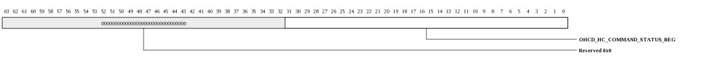
| Bits | Name | Type | Reset | Description
| 31:0 | OHCD_HC_COMMAND_STATUS_REG | RW | 0 | see OHCI Specification | |
|---|
OHCD_HC_INTERRUPT_STATUS_REG (USB_HOST_OHCD_HC_INTERRUPT_STATUS_REG: 0x3000c)
see OHCI Specification| Bits | Name | Type | Reset | Description
| 31:0 | OHCD_HC_INTERRUPT_STATUS_REG | RW | 0 | see OHCI Specification | |
|---|
OHCD_HC_INTERRUPT_ENABLE_REG (USB_HOST_OHCD_HC_INTERRUPT_ENABLE_REG: 0x30010)
see OHCI Specification| Bits | Name | Type | Reset | Description
| 31:0 | OHCD_HC_INTERRUPT_ENABLE_REG | RW | 0 | see OHCI Specification | |
|---|
OHCD_HC_INTERRUPT_DISABLE_REG (USB_HOST_OHCD_HC_INTERRUPT_DISABLE_REG: 0x30014)
see OHCI Specification
| Bits | Name | Type | Reset | Description
| 31:0 | OHCD_HC_INTERRUPT_DISABLE_REG | RW | 0 | see OHCI Specification | |
|---|
OHCD_HC_HCCA_REG (USB_HOST_OHCD_HC_HCCA_REG: 0x30018)
see OHCI Specification| Bits | Name | Type | Reset | Description
| 31:0 | OHCD_HC_HCCA_REG | RW | 0 | see OHCI Specification | |
|---|
OHCD_HC_PERIOD_CURRENT_ED_REG (USB_HOST_OHCD_HC_PERIOD_CURRENT_ED_REG: 0x3001c)
see OHCI Specification
| Bits | Name | Type | Reset | Description
| 31:0 | OHCD_HC_PERIOD_CURRENT_ED_REG | RW | 0 | see OHCI Specification | |
|---|
OHCD_HC_CONTROL_HEAD_ED_REG (USB_HOST_OHCD_HC_CONTROL_HEAD_ED_REG: 0x30020)
see OHCI Specification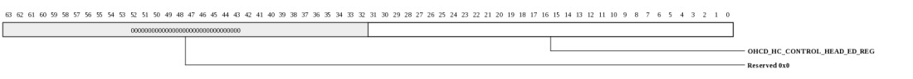
| Bits | Name | Type | Reset | Description
| 31:0 | OHCD_HC_CONTROL_HEAD_ED_REG | RW | 0 | see OHCI Specification | |
|---|
OHCD_HC_CONTROL_CURRENT_ED_REG (USB_HOST_OHCD_HC_CONTROL_CURRENT_ED_REG: 0x30024)
see OHCI Specification
| Bits | Name | Type | Reset | Description
| 31:0 | OHCD_HC_CONTROL_CURRENT_ED_REG | RW | 0 | see OHCI Specification | |
|---|
OHCD_HC_BULK_HEAD_ED_REG (USB_HOST_OHCD_HC_BULK_HEAD_ED_REG: 0x30028)
see OHCI Specification
| Bits | Name | Type | Reset | Description
| 31:0 | OHCD_HC_BULK_HEAD_ED_REG | RW | 0 | see OHCI Specification | |
|---|
OHCD_HC_BULK_CURRENT_ED_REG (USB_HOST_OHCD_HC_BULK_CURRENT_ED_REG: 0x3002c)
see OHCI Specification
| Bits | Name | Type | Reset | Description
| 31:0 | OHCD_HC_BULK_CURRENT_ED_REG | RW | 0 | see OHCI Specification | |
|---|
OHCD_HC_DONE_HEAD_REG (USB_HOST_OHCD_HC_DONE_HEAD_REG: 0x30030)
see OHCI Specification| Bits | Name | Type | Reset | Description
| 31:0 | OHCD_HC_DONE_HEAD_REG | RW | 0 | see OHCI Specification | |
|---|
OHCD_HC_FM_INTERVAL_REG (USB_HOST_OHCD_HC_FM_INTERVAL_REG: 0x30034)
see OHCI Specification
| Bits | Name | Type | Reset | Description
| 31:0 | OHCD_HC_FM_INTERVAL_REG | RW | 0 | see OHCI Specification | |
|---|
OHCD_HC_FM_REMAINING_REG (USB_HOST_OHCD_HC_FM_REMAINING_REG: 0x30038)
see OHCI Specification
| Bits | Name | Type | Reset | Description
| 31:0 | OHCD_HC_FM_REMAINING_REG | RW | 0 | see OHCI Specification | |
|---|
OHCD_HC_FM_NUMBER_REG (USB_HOST_OHCD_HC_FM_NUMBER_REG: 0x3003c)
see OHCI Specification| Bits | Name | Type | Reset | Description
| 31:0 | OHCD_HC_FM_NUMBER_REG | RW | 0 | see OHCI Specification | |
|---|
OHCD_HC_PERIODIC_START_REG (USB_HOST_OHCD_HC_PERIODIC_START_REG: 0x30040)
see OHCI Specification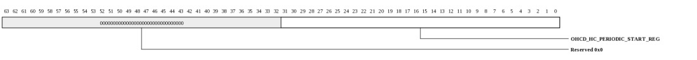
| Bits | Name | Type | Reset | Description
| 31:0 | OHCD_HC_PERIODIC_START_REG | RW | 0 | see OHCI Specification | |
|---|
OHCD_HC_LS_THRESHOLD_REG (USB_HOST_OHCD_HC_LS_THRESHOLD_REG: 0x30044)
see OHCI Specification| Bits | Name | Type | Reset | Description
| 31:0 | OHCD_HC_LS_THRESHOLD_REG | RW | 0 | see OHCI Specification | |
|---|
OHCD_HC_RH_DESCRIPTOR_A (USB_HOST_OHCD_HC_RH_DESCRIPTOR_A: 0x30048)
see OHCI Specification
| Bits | Name | Type | Reset | Description
| 31:0 | OHCD_HC_RH_DESCRIPTOR_A | RW | 0 | see OHCI Specification | |
|---|
OHCD_HC_RH_DESCRIPTOR_B (USB_HOST_OHCD_HC_RH_DESCRIPTOR_B: 0x3004c)
see OHCI Specification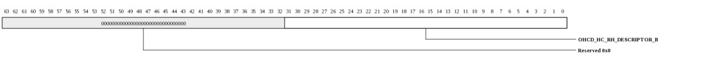
| Bits | Name | Type | Reset | Description
| 31:0 | OHCD_HC_RH_DESCRIPTOR_B | RW | 0 | see OHCI Specification | |
|---|
OHCD_HC_RH_STATUS (USB_HOST_OHCD_HC_RH_STATUS: 0x30050)
see OHCI Specification| Bits | Name | Type | Reset | Description
| 31:0 | OHCD_HC_RH_STATUS | RW | 0 | see OHCI Specification | |
|---|
Copyright © 2014 Tilera® Corporation. All rights reserved. Printed in the United States of America.
No part of this book may be reproduced, stored in a retrieval system, or transmitted in any form or by any means, electronic, mechanical, photocopying, recording, or otherwise, except as may be expressly permitted by the applicable copyright statutes or in writing by the Publisher.
The following are registered trademarks of Tilera Corporation: Tilera and the Tilera logo. The following are trademarks of Tilera Corporation: Embedding Multicore, The Multicore Company, Tile Processor, TILE Architecture, TILE64, TILEPro, TILEPro36, TILEPro64, TILExpress, TILExpress-64, TILExpressPro-64, TILExpress-20G, TILExpressPro-20G, TILExpressPro-22G, iMesh, TileDirect, TILEmpower, TILEmpower-Gx, TILEncore, TILEncorePro, TILEncore-Gx, TILE-Gx, TILE-Gx16, TILE-Gx36, TILE-Gx64, TILE-Gx100, TILE-Gx3000, TILE-Gx5000, TILE-Gx8000, DDC (Dynamic Distributed Cache), Multicore Development Environment, Gentle Slope Programming, iLib, TMC (Tilera Multicore Components), hardwall, Zero Overhead Linux (ZOL), MiCA (Multicore iMesh Coprocessing Accelerator), and mPIPE (multicore Programmable Intelligent Packet Engine). All other trademarks and/or registered trademarks are the property of their respective owners.
Third-party software: The Tilera IDE makes use of the BeanShell scripting library. Source code for the BeanShell library can be found at the BeanShell website (http://www.beanshell.org/developer.html).
The following is a trademark of Marvell Semiconductor, Inc.: Distributed Switching Architecture (DSA).
This document contains advance information on Tilera products that are in development, sampling or initial production phases. This information and specifications contained herein are subject to change without notice at the discretion of Tilera Corporation.
No license, express or implied by estoppels or otherwise, to any intellectual property is granted by this document. Tilera disclaims any express or implied warranty relating to the sale and/or use of Tilera products, including liability or warranties relating to fitness for a particular purpose, merchantability or infringement of any patent, copyright or other intellectual property right.
Products described in this document are NOT intended for use in medical, life support, or other hazardous uses where malfunction could result in death or bodily injury.
THE INFORMATION CONTAINED IN THIS DOCUMENT IS PROVIDED ON AN "AS IS" BASIS. Tilera assumes no liability for damages arising directly or indirectly from any use of the information contained in this document.